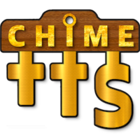

Locally combine TTS and audio in Home Assistant.
The official site for Chime TTS documentation, explanations and usage examples.

media_player.play_media
chime_tts.say

tts.speak or tts.*_say
No More Lag
Locally combine chimes and TTS audio for lag-free playback in a single action call.


Customizable
Create fully personalized notifications with a mix of TTS platforms, voices and languages.


Fine Tuning
Easily adjustment your TTS audio with a suite of tools and a simple user-interface.